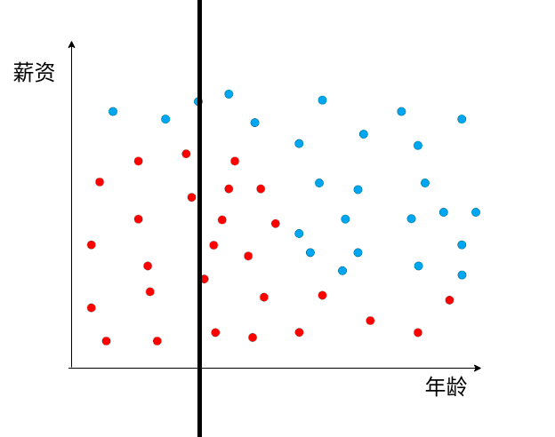
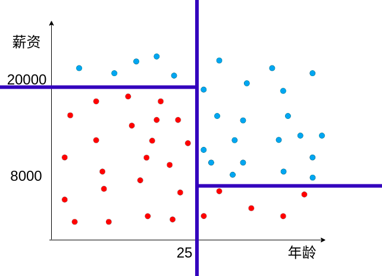
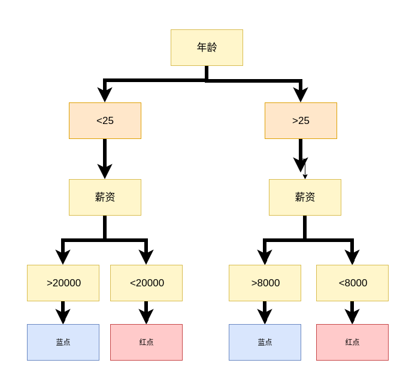
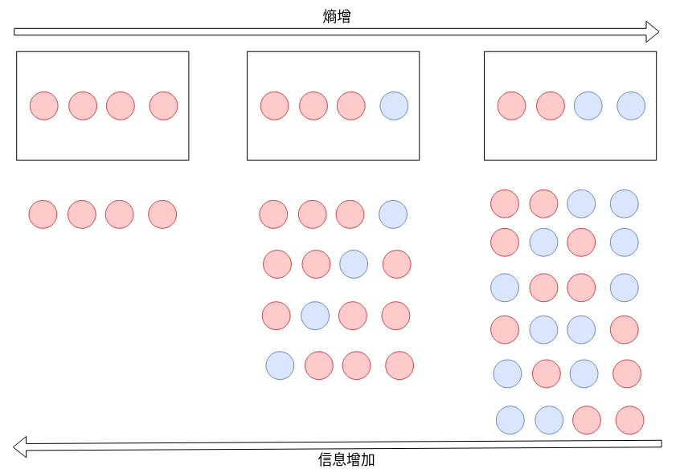
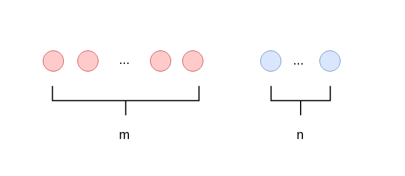
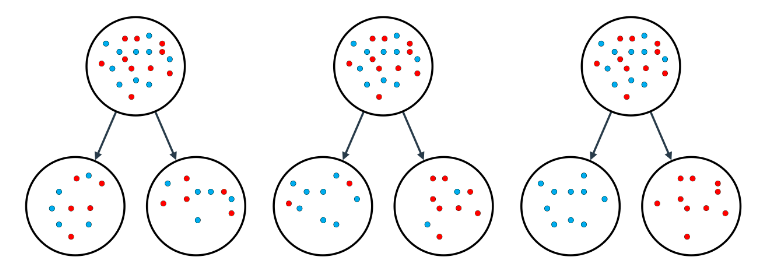
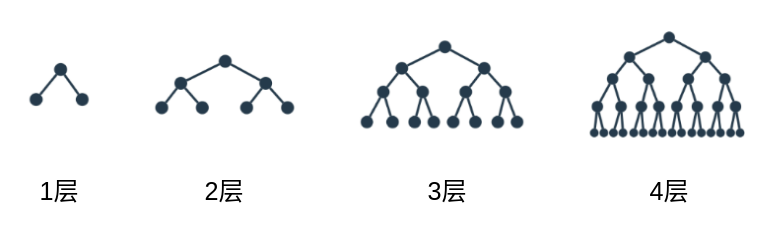

01-分类和回归-决策树¶
机器学习中两大类问题，分类和回归
- 回归：how much
- 分类： yes/no
决策树¶
决策树是一种常见的分类算法
| 性别 | 职业 | 喜好 |
|---|---|---|
| 女1 | 学生 | 王者农药 |
| 女2 | 工作 | 小红书 |
| 男1 | 工作 | 学习强国 |
| 女3 | 工作 | 小红书 |
| 男2 | 学生 | 王者农药 |
| 男3 | 学生 | 王者农药 |
思考题1¶
- 一个工作中的女性，你应该推荐什么应用给她？
- 一个在政府上班的男性，你推荐什么应用给他？
- 一个在上高中的女学生，你推荐什么应用给她？
思考题2¶
- 在年龄和职业两个因素中，哪个更会决定，用户下载软件的类型

决策树计算机求解¶
如何让计算机找出来数据的关系，分析出来哪个因素决定性更强

问题，上图的表， 水平的线 还是垂直的线更适合拆分数据？


信息论入门¶
A，B，C，D 四个选项，选什么好呢？
当小明不知道选ABCD的哪一个选项时，
你告诉小明D是错的，提供了0.415bits的信息，
再告诉小明A是错的，又提供了 0.585bits的信息，
再告诉小明b是错的，提供了1bits的信息
能够算出来上面的三个数字， 才算是理解了信息论。
信息是如何计算的，为什么还有单位？
因为物理量是一个物理量
长度的定义：1米，在0度时，一根铂铱合金的长度，保存在巴黎，国际米元器。
重量的定义：1立方分米的纯水在4℃时的质量 ，并用铂铱合金制成原器，保存在巴黎，后称国际千克原器。
衡量一个物体多长，就看一下需要多少个米原器去度量。
衡量一个物体多重，就看一下需要多少个重量的参考物。
信息消除的是不确定性， 参考的是抛硬币。
抛硬币有50%的正面概率和反面概率， 抛一次硬币的信息是1bits
抛两次硬币的信息有4种，抛3次是8种， 不是简单的乘法，除法运算关系。 是指数和对数运算关系。
ABCD四个选项的不确定性是2个bits（在abcd等比例分布的情况下)
\log _{2}4-\log _{2}3\simeq 0.415
\log _{2}\dfrac {1}{3}-\log _{2}\dfrac {1}{4}\simeq 0.415
信息论和熵（entropy）¶
长 - 短
快 - 慢
熵 - 秩
熵： 表明的是内部分子的混乱程度。

信息论¶
每次从盒子里面取一个球，记录颜色，取完后把球重新放回盒子再充分打散，连续4次。
求： 最终颜色和盒子之前颜色状态一致的可能性。
| P(红色) | P(蓝色) | P(胜利) | |
|---|---|---|---|
| 红红红红 | 1 | 0 | 1x1x1x1=1 |
| 红红红蓝 | 0.75 | 0.25 | 0.75x0.75x0.75x0.25=0.105 |
| 红红蓝蓝 | 0.5 | 0.5 | 0.5x0.5x0.5x0.5=0.0625 |
概率越小，信息量越小。
概率越小，熵越大。
概率越大，信息量越大。
概率越大，熵越小。
物体越混乱，分布越均匀，信息量越小。
思考一个问题：
1000个球的话，那种情况P（胜利）最小，熵最大。
0.5的1000次方= 9.332636185032189e-302 ，是一个非常小的数据， 计算机不适合做非常小的数据的计算，精度会丢失，计算效率又很慢。
如何把这种乘法转化成一种容易计算的比较大一点的数据运算呢？
计算机不喜欢小的数， 浮点数，小数点后面多少位？ 双精度浮点型，小数点后面多少位？ 另外乘法不利于运算和比较，一旦有一项发生变化，整个结果都要重新乘一遍。
log函数，可以让乘法变成加法\log_{e} MN=\log_{e} M+\log_{e} N
0.75 * 0.75 * 0.75 * 0.75 * 0.75 = ?
log0.75 + log0.75 + log0.75 + log0.75 + log0.75 = ?
| P(红色) | P(蓝色) | P(Right) | -log_{2} P(Right) | entropy熵（平均值） | |
|---|---|---|---|---|---|
| 红红红红 | 1 | 0 | 1x1x1x1=1 | 0+0+0+0=0 | 0 |
| 红红红蓝 | 0.75 | 0.25 | 0.75x0.75x0.75x0.25=0.105 | 0.415+0.415+0.415+2=3.245 | 0.81 |
| 红红蓝蓝 | 0.5 | 0.5 | 0.5x0.5x0.5x0.5=0.0625 | 1+1+1+1=4 | 1 |
上述公式，entropy 熵越大， 混乱程度越高，信息量越小。

多分类熵计算¶
entropy=-\dfrac {m}{m+n}\log (\dfrac {m}{m+n})-\dfrac {n}{m+n}\log (\dfrac {n}{m+n})
假设
P_{1}=\dfrac {m}{m+n}
P_{2}=\dfrac {n}{m+n}
entropy=-P_{1}\log P_{1}-P_{2}\log P_{2}
推广到一般情况
entropy=-P_{1}\log P_{1}-P_{2}\log P_{2}-\ldots -P_{n}logP_{n}=-\sum ^{n}_{i=1}P_{i}\log P_{i}
思考题¶
哪个图的信息含量高，哪个题的熵小

信息量（information gain)¶
决策树算法¶
让信息获取 information gain最大的算法。
之前的mse，在这就是information gain
随机深林¶
| 性别 | 年龄 | 籍贯 | 平台 | 工作 | 爱好 | App |
|---|---|---|---|---|---|---|
| 女 | 16 | 河南 | IOS | 学生 | 电子游戏 | 王者农药 |
| 女 | 26 | 广东 | Android | 工作 | 排球 | 小红书 |
| 男 | 33 | 山东 | Android | 工作 | 乒乓球 | 学习强国 |
| 女 | 40 | 福建 | IOS | 学生 | 乒乓球 | 小红书 |
| 男 | 12 | 山东 | IOS | 学生 | 台球 | 王者荣耀 |
| 男 | 14 | 广东 | Android | 学生 | 排球 | 王者荣耀 |
实际数据可能维度非常多，如何更好的做出决策呢， 一般我们随机选取两列因子，根据两列因子做出预测。
比如说按照性别和职业进行预测， 按照年龄和爱好进行预测 按照籍贯和平台进行预测。 每种预测好像都是一个人民群众， 最后按照人民群众的智慧进行投票决策。这种做法就叫做 random forest 随机深林
超级参数 hyper parameter¶
深度为k的决策树，最多能有$ 2^{k}$个叶子
超参：
max_depth: 决策树最多有多少层，决策树层数越多，越有可能过拟合。min_samples_leaf: 一个叶子节点如果想继续分割，最少有多少个元素.min_samples_split: 分割后的子节点里面最少有多少个元素

决策树案例¶
用决策树来解决数据分类问题。
sklearn有决策树的工具包 叫 DecisionTreeClassifier
- 加载包，创建sklearn决策树的模型
1 2 | |
- 加载数据集，进行训练
1 | |
-
进行预测
python print(model.predict([ [0.2, 0.8], [0.5, 0.4] ])) print(model.predict([ 0.2, 0.8]))
默认的生成的模型， 精确度可能不是特别高，我们需要调整超级参数，把精确度提升
1 | |
过拟合和欠拟合¶
过拟合：泛化能力不强， 训练集预测数据准确性不错
欠拟合：训练集预测数据准确性不足
作业，调整参数¶
观察模型的泛化能力
1 2 3 4 5 6 7 8 9 10 11 12 13 14 15 16 17 18 19 20 21 22 23 24 25 26 | |
决策树优缺点：¶
优点：
1、可以生成可以理解的规则
2、计算量相对不是很大
缺点：
1、对连续型字段比较难预测
2、当类别较多时，错误可能增加的比较快
3、对处理特征关联性比较强的数据时，表现的不是太好